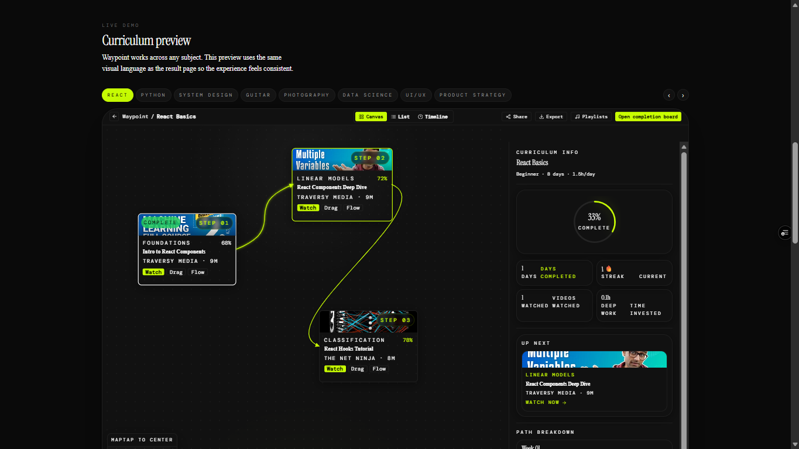
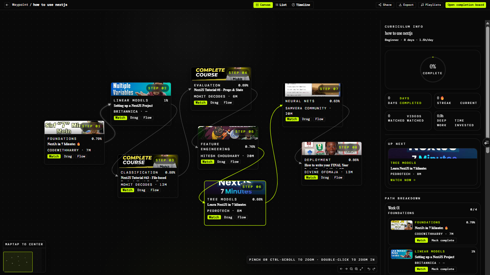
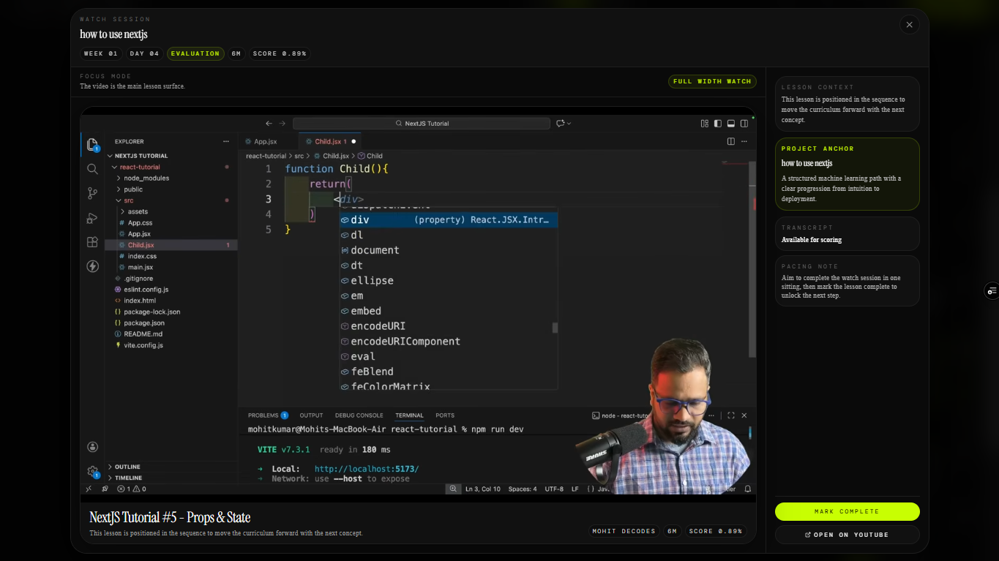

Waypoint
The internet gives you content. Waypoint gives you a path—an AI curriculum engine that turns a learning goal into a sequenced playlist of real YouTube videos in about five minutes.




Context
The internet has endless content but no order. Learners drown in tutorials piled on tutorials, and most roadmaps are static lists that ignore what you already know and how much time you actually have. Waypoint inverts that: you state the outcome you want, and it produces a path—real videos, in the right order, paced to your level.
What I built
A curriculum engine that takes a goal, a level and a daily time budget, then assembles a dependency-aware sequence from real YouTube videos—scored and ranked for credibility and fit. The result page lets you move through the path as a canvas, a list or a timeline, with progress tracking: streaks, videos watched, deep-work hours and a completion board. Phase 1 ships with a live demo and a waitlist for early access.
Why this approach
Order beats volume. By sequencing concepts so prerequisites come first—rather than letting popularity decide—and scoring sources for credibility, Waypoint removes the noise that makes self-learning stall. The progress layer turns a passive playlist into something that behaves like a product.
Status
Phase 1 is live and active. Launch is free while feedback and usage data are collected, with a waitlist feeding early access as the product ships.